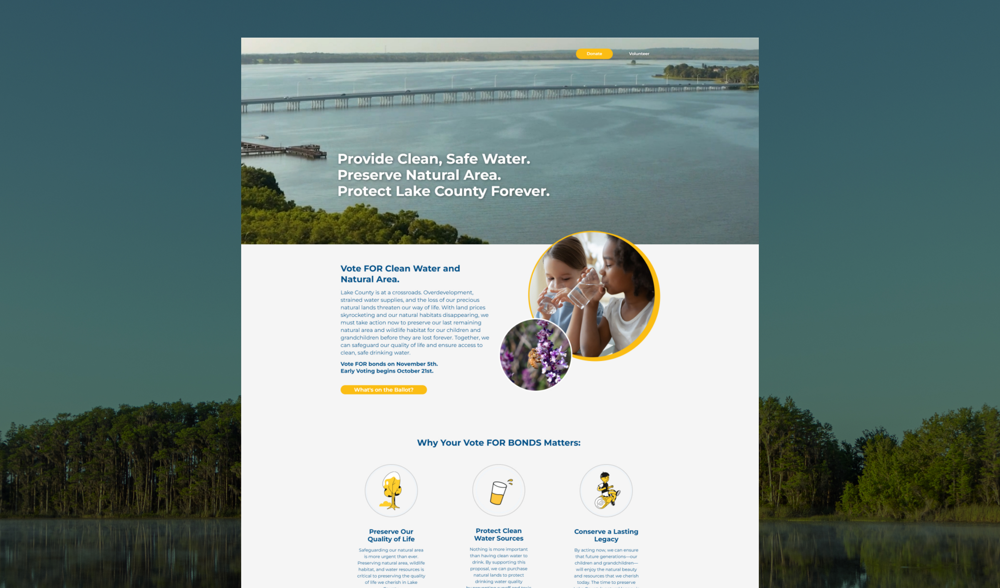
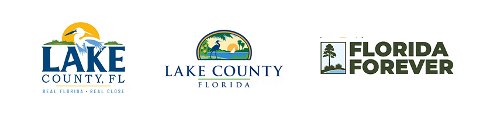
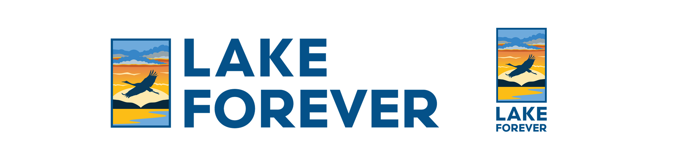
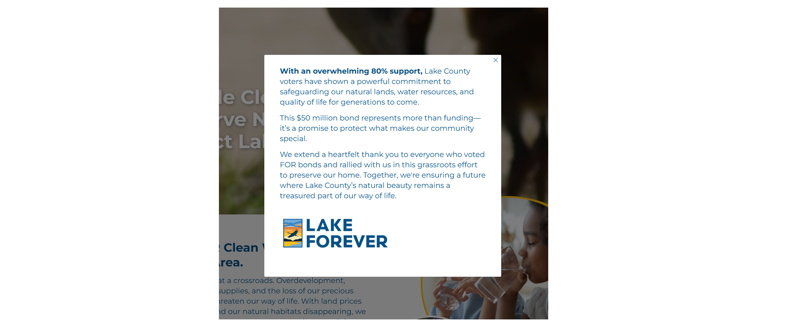
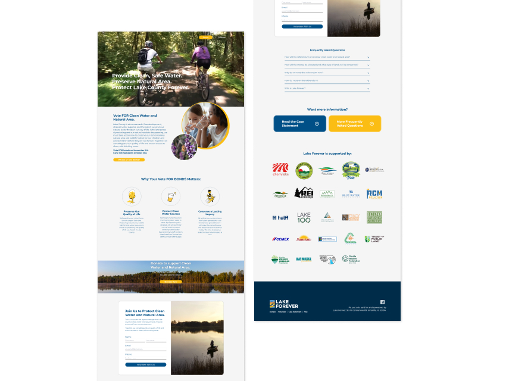

In fall 2024, Lake County, Florida was facing a ballot referendum to renew an expiring conservation tax that had funded major land acquisitions across the county for the past 20 years. A grassroots citizen committee formed to campaign for the measure under the name Lake Forever, working to reach 290,000 registered voters in a matter of weeks.
I designed the logo and campaign website for the initiative, working from a name, message, and timeline set by the committee. With a hard November election deadline, the turnaround was fast, but the resulting identity gave a volunteer-run campaign a clear, credible presence countywide, well beyond the scope of a typical one-off project.

The context
The measure was a renewal, not a new tax: 20 years earlier, a similar bond had funded the acquisition of natural land across the county, including what’s now Lake Hiawatha Preserve. Those funds were long spent, and the county’s population had grown substantially since, putting more pressure on the natural areas the original bond had helped protect. Renewing the tax would let the county issue up to $50 million in bonds for land conservation, water protection, and parks and trails, at an estimated cost of about $21 a year for the average homeowner — a genuinely non-partisan case for a broad coalition of residents.
Naming and message
Before I got involved, the committee worked through the ballot’s official language — a mouthful officially titled the Clean Water Protection, Overdevelopment Prevention, Natural Area Preservation, Parks and Trails General Obligation Bond Referendum — to find a name simple enough to rally around. Early options ranged from literal (“Vote for Clean Water, Natural Areas, and Parks”) to more evocative (“Lake County’s Water and Land Legacy”). The committee landed on Lake Forever: short, memorable, and deliberately echoing Florida Forever, the state’s own long-running conservation program, to borrow some of that program’s built-in trust and recognition.
Logo design
The direction from the committee was clear: design something in the spirit of the Florida Forever logo, since that mark already carried real equity with conservation-minded voters, but make it locally specific to Lake County. That meant carrying over a similar typographic feel and layout, while replacing Florida Forever’s icon with something that tied more directly to Lake County itself, nodding to the existing Lake County government logo rather than the state program.

The result needed to do a lot in a very small space: read instantly as trustworthy and civic, feel distinctly Lake County, and still work at the speed a volunteer campaign needed. The final mark nods to the county’s natural landscape — paddleboarding, bald cypress, and a sandhill crane among the reference points that shaped it.

Website design

Once the logo was set, I designed the campaign website to serve as the campaign’s central hub, the place every piece of collateral, every social post, and every conversation would point back to. The site needed to do a few jobs at once: explain a fairly technical ballot measure in plain language, build trust with a politically diverse audience, and make it easy for someone to act, whether that meant sharing the campaign, donating, or simply understanding how to vote.
Structurally, the site leaned heavily on FAQ-style content, since so much of the campaign’s job was pure voter education: what the bond would fund, why a referendum (rather than another funding method) was necessary, what it would actually cost the average homeowner, and how spending would be held accountable through a citizen oversight committee. Those messaging priorities — especially framing the measure as a renewal rather than a new tax, and leading with the modest estimated annual cost — came from the committee’s own message strategy; my job was making sure the design surfaced them clearly and early rather than letting them get buried in policy language.
The result
The referendum passed on November 5, 2024 with about 80% of the vote, a wide margin that reflected how broadly the “clean water and quality of life” message resonated across the county. After the election, we updated the site with a thank-you message to visitors, closing the loop on the campaign the same way it opened: clear, warm, and focused on the shared outcome rather than the politics of getting there.
The Lake Forever website is still live today at votelakeforever.com, and the campaign was covered by local outlets including the Clermont Sun, which described the measure’s stakes for the county’s environmental future.
